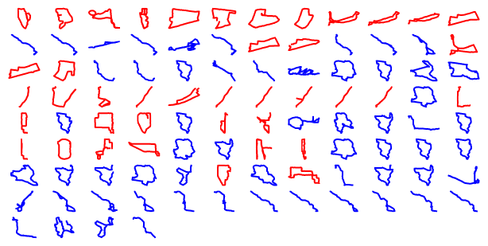
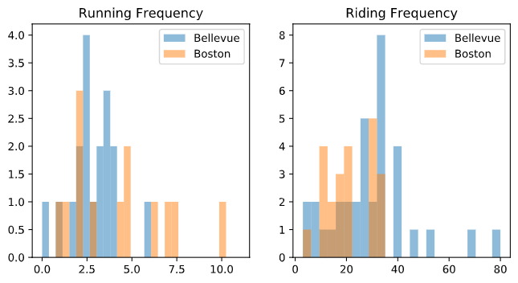

Strava Visualizer
Web App
To authorize your Strava account to use the heatmap visualizer click here .(Note: Google Sign in will not work on mobile, per Strava)
Personal Plotting
Below are some of my routes I plotted before I made the web app.I have four different maps for my runs and rides in Bellevue, WA and Boston, MA. I've found that since the scale is so different it is much easier to have separate graphs, or else my running gets dwarfed. This was a cool opportunity to play around with map data, as well as practicing more with matplotlib.
Runs in Boston
n = 13
mean = 4.34 miles
std = 2.62 miles
median = 4.5 miles
Runs in Bellevue
n = 18
mean = 2.83 miles
std = 1.25 miles
median = 2.81 miles
Rides in Boston
n = 22
mean = 21.35 miles
std = 8.77 miles
median = 20.97 miles
Rides in Bellevue
n = 37
mean = 28.33 miles
std = 15.81 miles
median = 28.35 miles
More Graphical Representations
 Although the data does not lend themselves to meaningful analysis for myself at this time, the main point of this project was to learn about new ways of visualizing new types of data. Note that on the histograms above, the scale of the x and y axes are both different. The map above that is all the different routes I have ran or biked, with red meaning running and blue meaning biking.
Eventually, I will want to turn this into more of a web app where anyone can see the aggregate statistics about their exercise, but I am happy with the skills I learned with regard to API calls, learning a bit of JavaScript to visually display the data, and improving my skills with matplotlib. The python notebook file with my calls to my data can be found here.